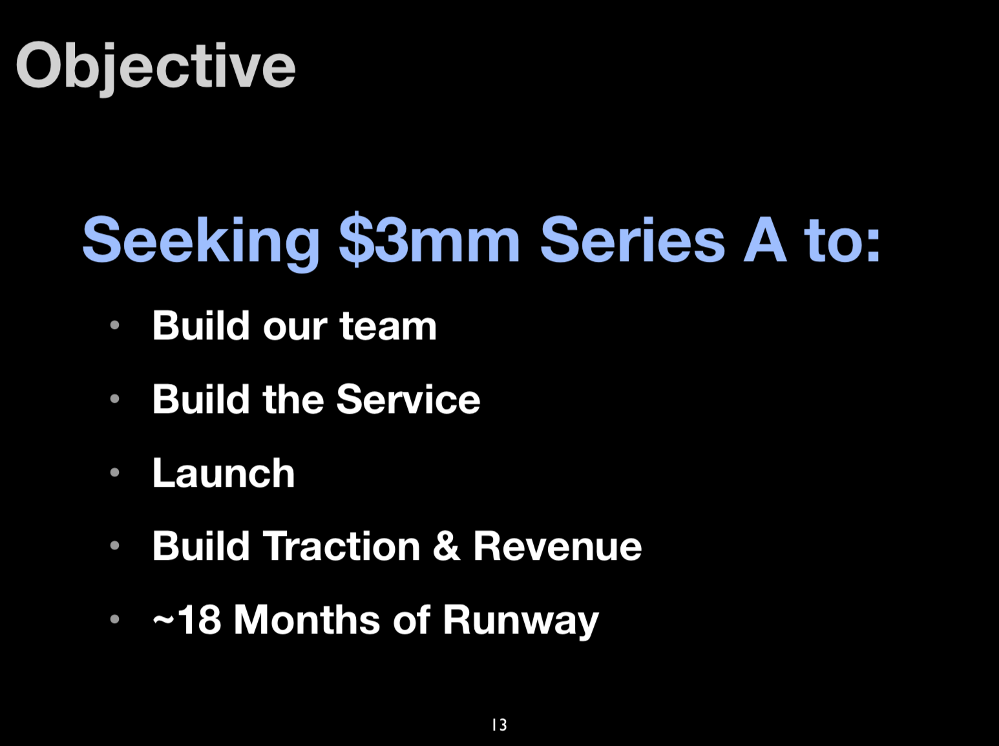

Perspective is worth 80 IQ points
Alan Kay
24 years
10 years

Take what worked at the big web and do it everywhere else!
Adam and Jesse
Which parts of the big web are important
Standardize the contracts between layers
name "base"
run_list [
"auth::default",
"mounts::default",
"networking::default",
"remote_access::default",
"time::default",
"hardening::default",
"tuning::default",
"applications::default",
"compliance::default",
"patching::default"
]
named_run_list "bootstrap", "bootstrap::default"
Standardize the contracts between layers
Streamline the Delivery Path
Technology companies first, not second
Approach technology as a product
Confidence Gap
They don't have legacy software like us
The Enterprise
They have more resources than we do
The Enterprise
They don't have the regulatory burden we do
The Enterprise
You are tech companies first
You are the best
I/my people can't because (too stupid)
We can't because "they" won't
Strategic Overconfidence
Vocabulary Theft